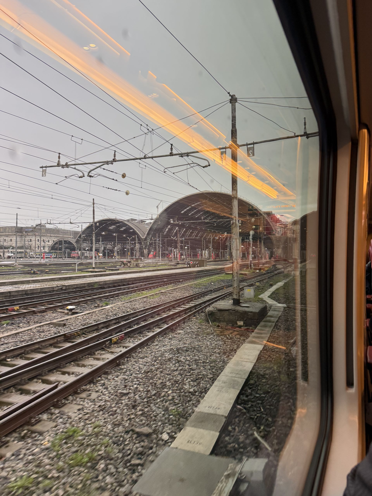
Flutter Heroes 2025, Torino
12 March 2025, UCI Cinema Torino Lingotto. Fourth edition of Flutter Heroes, and my second one in a row after 2024 — same organisers, /synesthesia events, same city, completely different room: this time the conference was held inside a cinema.
Which turns out to be the best venue a developer conference can ask for. Reclining red seats, a screen the size of a wall — code at a font size everybody in the last row can read — and, at the box office downstairs, three "TODAY! Flutter Heroes" posters slotted into the frames between Il Nibbio and Sonic 3. Doors at 8.45, first talk at 9.15, curtain down at six.
4thedition of Flutter Heroes
2ndyear in a row for me
9.15 → 18one screen, one track
140 kmMilano to Torino, by train
- FlutterHeroes25
- Flutter
- Dart
- Firebase Genkit
- GenAI
- Shorebird
- Serverpod
- CI/CD
- pub.dev
- Torino
Four editions, three venues
From a Talent Garden auditorium to a car museum to a multiplex at the Lingotto — Flutter Heroes keeps changing rooms and staying in Torino.
- 2022 Torino, Talent Garden The first edition, part of Google's Flutter Festival
- 2023 Torino, MAUTO Second edition, at the car museum
- 2024 Torino, MAUTO Third edition — the one before this
- 2025 Torino, UCI Lingotto Fourth edition, 12 March — in a cinema
Getting there
Same trip as the year before: an early train out of Milano, and the 140 km to Torino done before nine. The venue this time is in the Lingotto, the old Fiat factory turned shopping centre and conference complex, where the multiplex sits above the shops — so you arrive at a conference by walking past a cinema box office that is advertising your conference between two films.
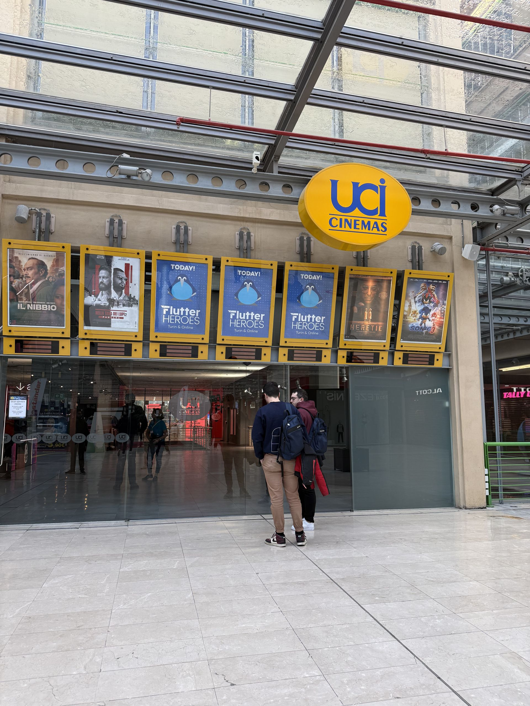
"TODAY! Flutter Heroes", between Il Nibbio and Sonic 3
In the foyer
Upstairs, past the ticket desks and the popcorn, the usual signs of a conference appear where you would normally queue for a film: the Flutter HEROES letters parked against a pillar, a totem with the bird on it at the top of the stairs, and a red carpet going down to the screens.
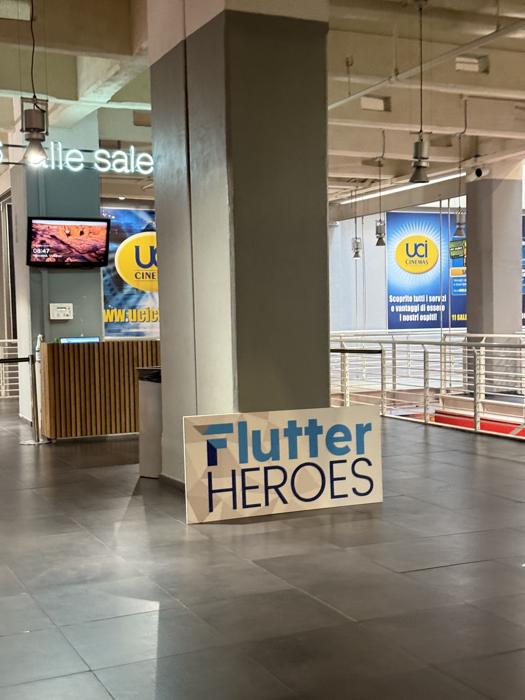
Between the screens and the shops
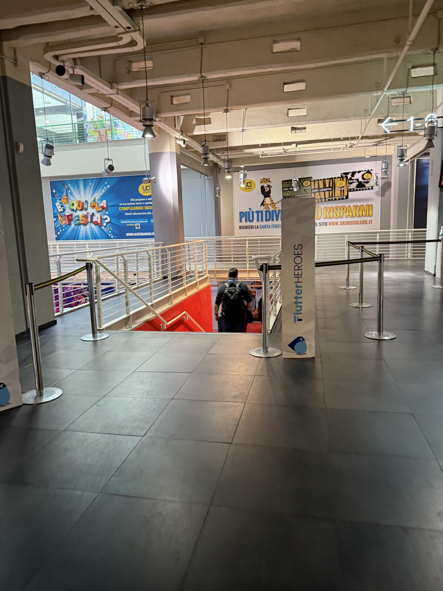
Down the stairs, onto the red carpet
A conference on a cinema screen
Then the room itself: Flutter HEROES in big letters along the front of the stage, a full house of reclining seats, and every slide the size of a film. Between one talk and the next the screen ran the conference bumper — "connecting the Flutter community", then Dash, then the logo — which on a cinema screen with cinema speakers is a different experience from a projector in a conference room.
The bumper between two talks, Dash included
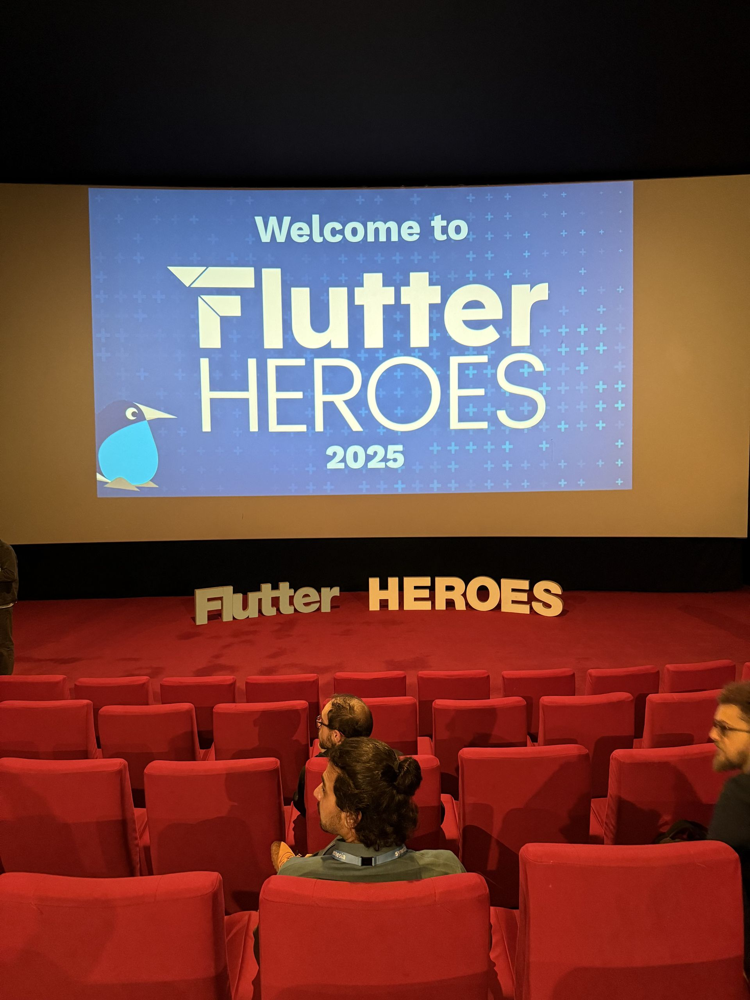
"Welcome to Flutter Heroes 2025"
Firebase Genkit, and AI inside a Flutter app
Sasha Denisov opened the AI half of the day with Building Next-Level Flutter Apps with AI using Firebase Genkit: Genkit as the layer that lets a Flutter app talk to Gemini, Gemma, Claude or GPT without wiring each of them by hand, developed and debugged locally and then deployed on Cloud Functions or Cloud Run. He came back later in the day for the opposite problem — GenAI without connection, money or privacy concerns, which means the model running on the device instead of behind an API key.
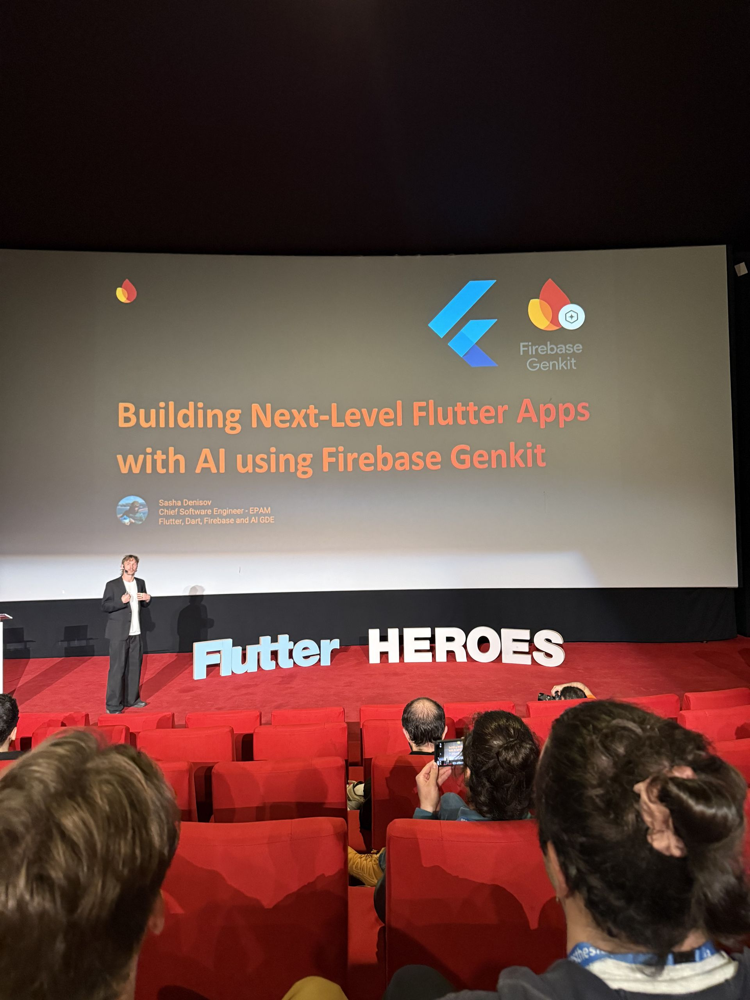
"Building Next-Level Flutter Apps with AI using Firebase Genkit"
A journey to continuous delivery
François Nollen and Adrien Body, both staff engineers at SNCF Connect & Tech, walked through scaling continuous delivery for a Flutter app used by millions of people every day on Android and iOS. Pipelines built on GitHub, Fastlane and Shorebird for code push, store review and signing constraints, feature flags and beta channels to make a release boring, and tests all the way from unit tests up to the rollout toggles. Nollen had been on the same conference's stage the year before, with the 2024 talk on app footprint.
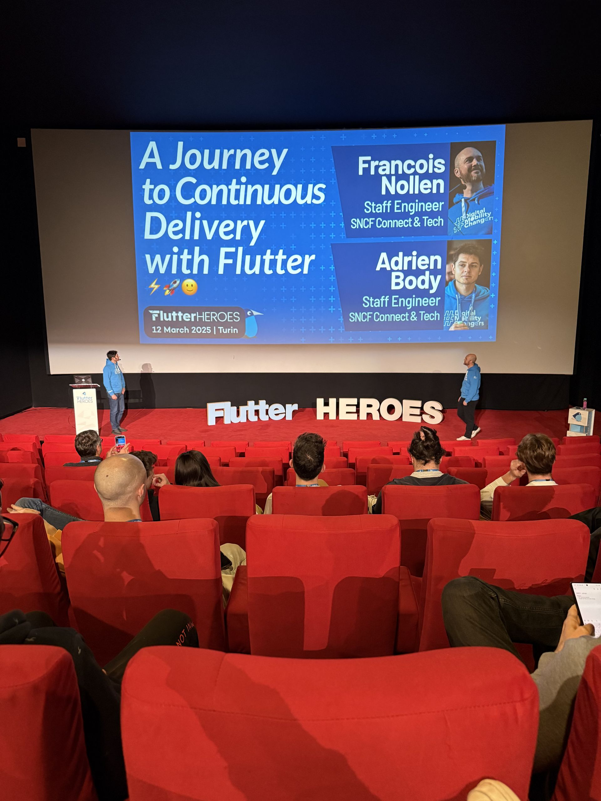
"A Journey to Continuous Delivery with Flutter", SNCF Connect & Tech
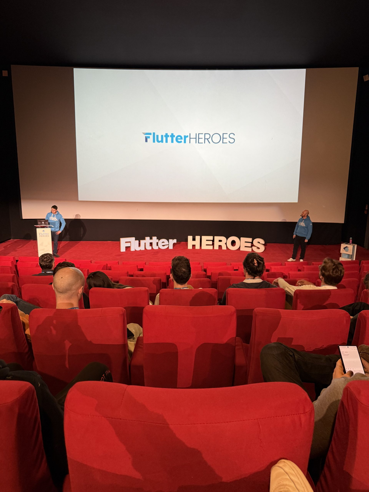
Two speakers on stage, seen from the red seats
Dependencies, packages and the rest of the day
The other half of the schedule was about the things you put into an app and then have to live with. How to read a package page on pub.dev before adding it to a project — likes, pub points, verified publisher, the download graph, when the last release was — and when to write the thing yourself instead. Around it: HTTP clients and network managers built properly, internationalization, getting the benefits of the RenderObject layer without writing one, a Flutter Web case study on shipping an existing web app to iOS for very little money, a multiplayer drawing game with Dart and Serverpod on the backend, and a roundtable to close.
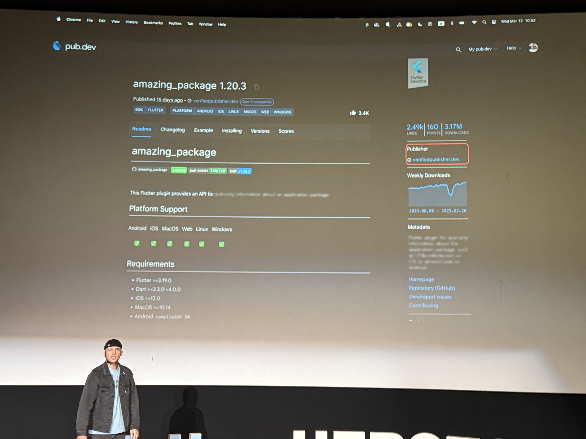
Judging a package before you depend on it
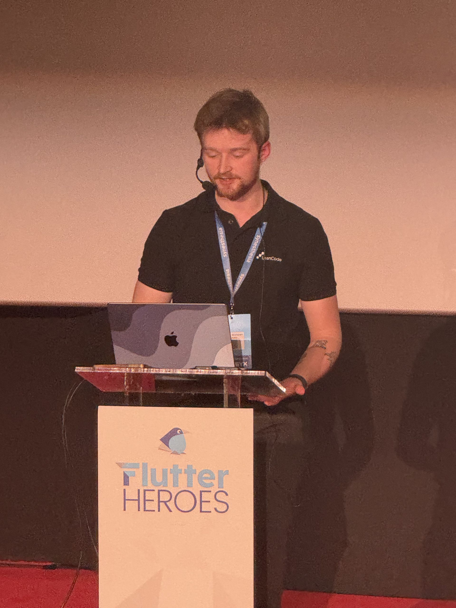
At the lectern, with the bird on it
Our journey with Flutter
One session was a straight case study, and the slide that stuck with me was the timeline: Flutter 1.0.0 and the first experiments in 2018, Flutter adopted as the cross-platform framework in 2020-2021, proposed to clients for the web from 2021-2022, and today more than 20 active projects and over 50 Flutter developers.
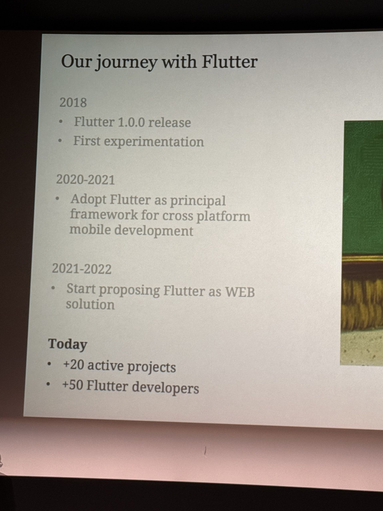
2018 to today: +20 projects, +50 Flutter developers
Closing, and the next one
Six in the evening, four stools left on the stage from the roundtable, and the last slide of the day was an advert for the following event of the same family: AI Heroes, 27 May 2025. Then back down the red carpet, past the box office, and onto a train home. Six months later I was at Fluttercon Europe and droidcon Berlin — but that one I was speaking at, not only watching.
Flutter Heroes 2025, UCI Cinema Torino Lingotto, Via Nizza 262, Torino, 12 March 2025.